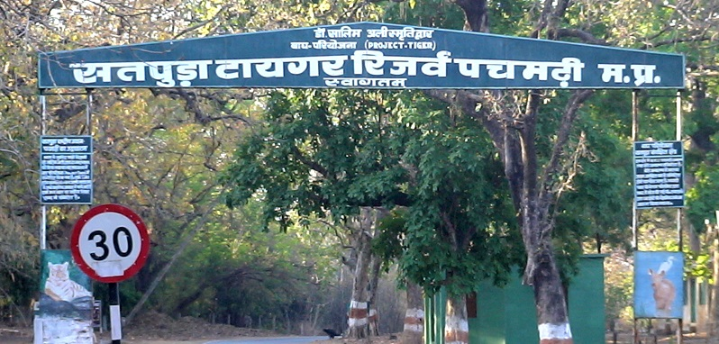
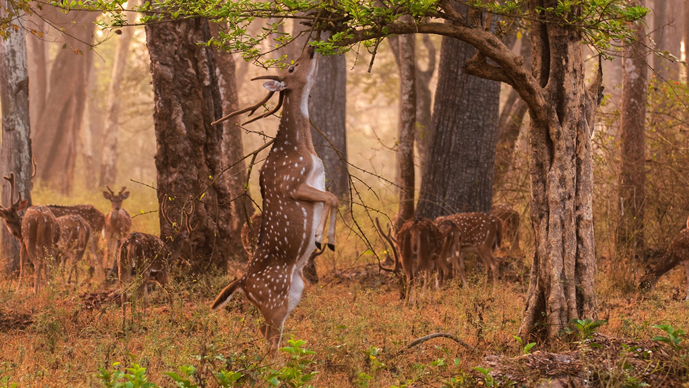
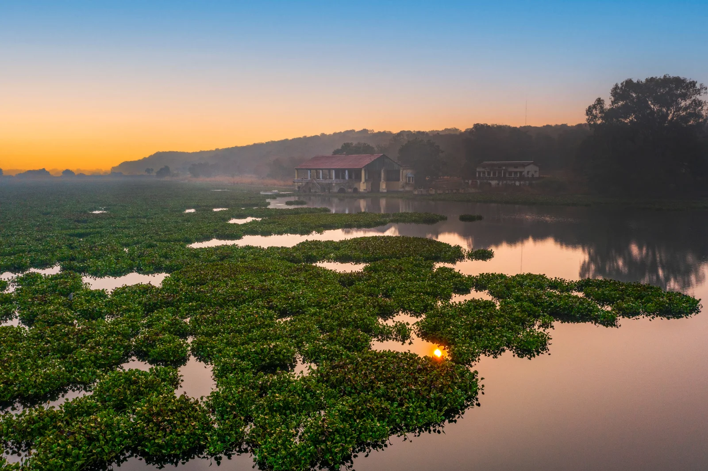
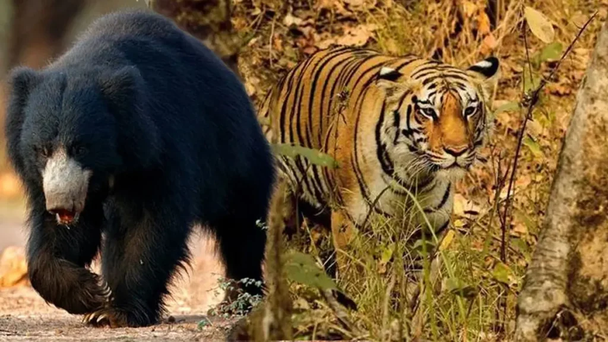
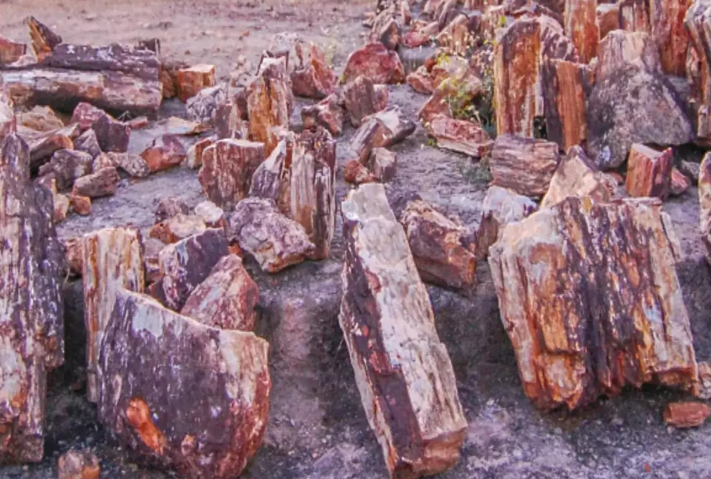

Nature's Paradise: Discovering beauty of wildlife
1. Kanha National Park 🐯

Famous for: Inspiration for "The Jungle Book".
Key Wildlife: Bengal Tigers, Barasingha (Hard-ground Swamp Deer), Leopards, Sloth Bears.
Location: Mandla & Balaghat districts.
2. Bandhavgarh National Park 🐅
Famous for: Highest density of Royal Bengal Tigers in India.
Key Wildlife: Tigers, Leopards, Sambar Deer, Jackals.
Location: Umaria district.

3. Pench National Park 🦁

Famous for: Setting of "The Jungle Book."
Key Wildlife: Tigers, Wild Dogs (Dholes), Indian Bison (Gaur).
Location: Seoni & Chhindwara districts.
4. Satpura National Park 🌲
Famous for: Diverse landscape & walking safaris.
Key Wildlife: Leopards, Malabar Giant Squirrels, Crocodiles, Sloth Bears.
Location: Hoshangabad (Narmadapuram) district.

5. Panna National Park 🏞️

Famous for: Diamond mines & tiger reintroduction project.
Key Wildlife: Tigers, Gharials, Indian Vultures.
Location: Panna & Chhatarpur districts.
6. Madhav National Park 🌳
Famous for: Scenic lakes & historical significance.
Key Wildlife: Leopards, Nilgai, Crocodiles.
Location: Shivpuri district.

7. Sanjay-Dubri National Park 🌿

Famous for: Dense forests & diverse birdlife.
Key Wildlife: Tigers, Sloth Bears, Porcupines.
Location: Sidhi & Singrauli districts.
🦇 8. Fossil National Park 🦕
Famous for: Plant fossils over 65 million years old!
Key Feature: Preserved prehistoric trees & fossils.
Location: Mandla district.
